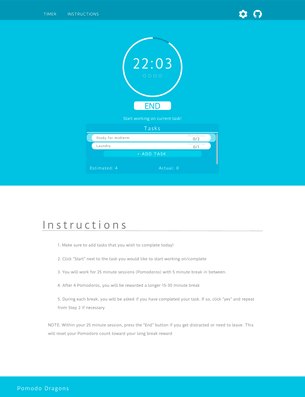
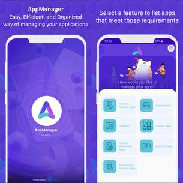
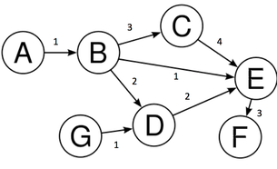
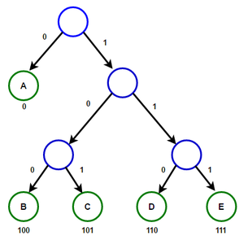
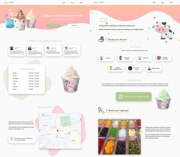

The Pomodoro Timer was a Web App built with a team of classmates within the class CSE 110
(Software Engineering).
It implemented the Pomodoro study technique with an addition to
a convenient task list to help users with organization and time management.
From this
project, I was able to increased my HTML/CSS/Javascript knowledge and learn many workflows that
are practiced within the Software workforce. Team bonding was emphasized and allowed me to gain
perspective of what a strong, efficient team consists of.
To view the Pomodoro Timer Click Here
PROJECTS
Pomodoro Timer

AppManager

During my last internship, I was given the task to create an Android application. This app was
called AppManager.
Essentially, the app was a way to manage all the apps you have
downloaded on your device and give you valuable information on how to manage them - usability,
security, storage, battery usage, etc.
This full stack development of the application
allowed me to learn a lot about the Software app creation project. I dived deep into
documentation, working with temas, meeting deadlines, designing in the front-end, and
programming/debugging in the back-end.
Click to view AppManager
Huffman Compression/Graphs

During the completion of CSE 100, we created a lossless file compression method using the Huffman Tree method. We were required to both compress and uncompress files based on our created Huffman Tree through an algorithmic process. The program was coded in C++ and consisted of reading/writing through Bitwise I/O bufferss

Another CSE 100 project required su to simulate graph properties. We created an appropriate data structure to hold all the information of a graph and then create algorithms to find out information about the graph - for example, Bread-First Search and Dijkstra's algorthims were created in order to find both unweighted and weighted shortest paths.
YogurtWorld

When joining the pro-bono consulting company at UCSD, we often get clients that need help on the
technical side in order to frow their business. For YogurtWorld, the frozen yogurt shop on
campus, they wanted to create a website in order to better advertise their store and
products/flavors in order to gain more traffic within the location.
Working with fellow
classmates in the club, we started to both design and develop a professional-looking website in
order to satisfy our client and their needs of technical aid.
The YogurtWorld website
will be published soon...